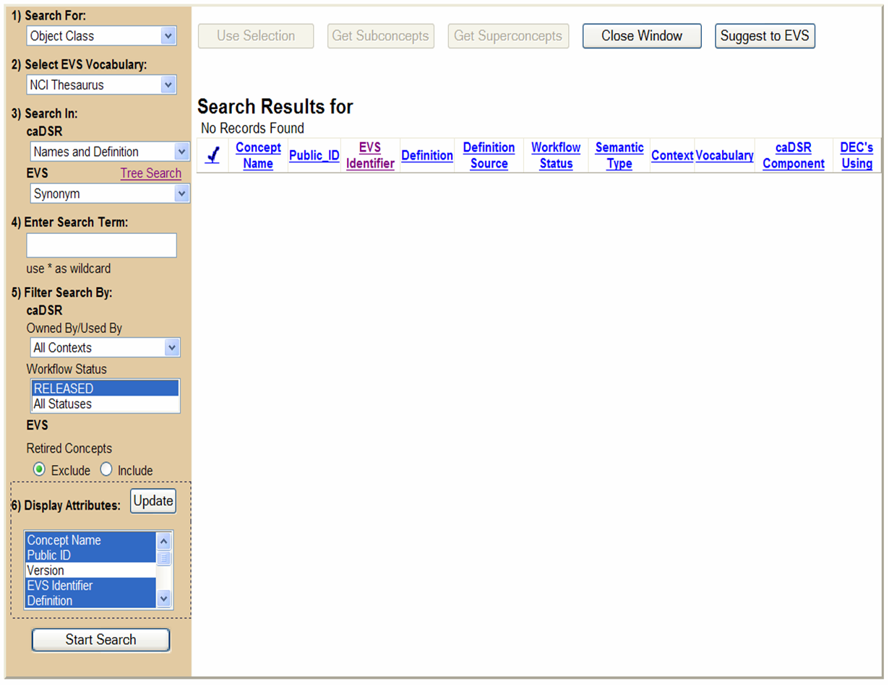
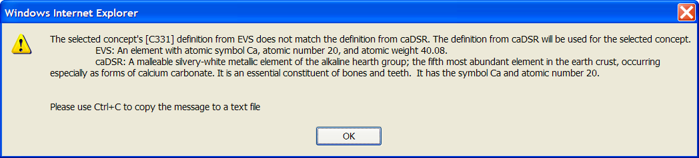
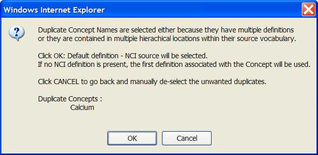

A wealth of clinical and scientific and clinical research data exists within the cancer research community. The NCI's Center for Bioinformatics (NCICB) has developed an evolving core infrastructure designed to provide the ability to seamlessly translate and interchange semantically immutable information. The caCORE infrastructure provides researchers, developers and statisticians with the ability to plug their existing data, sources and methods into a standardized sharable framework that supports information exchange, regardless of source, location or format.
Different biomedical domains have their own terminologies and ontological resources, each focused on different concepts within their domain. A common terminology is the foundation for interoperability between systems, indexing repositories of information, and querying and integrating information sources across research areas. The Enterprise Vocabulary Services (EVS) is a set of vocabulary resources that are being used to provide a common terminology across the cancer research domain, improving communication between the people, organizations, data and data sources in it.
NCICB's clinical trials informatics efforts draw on EVS whenever domain terminology is required. This reliance on controlled vocabulary ensures that term meanings remain clear and can be related to other terms with similar concepts.
The EVS Project is a collaborative effort of the Center for Bioinformatics and the NCI Office of Communications. EVS includes Distributed Terminology System (DTS) Vocabularies and the NCI Metathesaurus. The DTS Vocabularies include:
- NCI Thesaurus: a biomedical thesaurus created specifically to meet the needs of the NCI, is produced by the NCI EVS project. This knowledgebase contains the working vocabulary used in NCI data systems. It covers clinical, translational and basic research as well as administrative terminology.
- GO: GO Ontology, published by the Gene Ontology Consortium.
- VA NDFRT: Published by the US Veterans' Administration, the National Drug File Reference Terminology covers clinical drugs used at the VA.
- LOINC: Published by the Regenstrief Institute, the Logical Observation Identifier Names and Codes covers clinical laboratory terminology.
- MGED Ontology: The MGED (Microarray Gene Expression Data) Ontology, produced by the MGED Society, contains concepts, definitions, terms, and resources for standardized description of a microarray experiment in support of MAGE v.1. The MGED ontology is divided into the MGED Core ontology which is intended to be stable and in synch with MAGE v.1; and the MGED Extended ontology which adds further associations and classes not found in MAGEv.1.
- MedDRA: MedDRA (Medical Dictionary for Regulatory Activities) is an international medical terminology developed under the auspices of the International Conference on Harmonization of Technical Requirements for Registration of Pharmaceuticals for Human Use (ICH).
- SnoMed: SnoMed is the universal health care terminology maintained by SNOMED® International, a division of the College of American Pathologists (CAP).
In the CDE Curation Tool, the EVS Vocabularies can be searched for primary and qualifier concepts that can be used to create the names for Object Class, Property, and Representation Terms. These are the building blocks for Data Element Concepts and Value Domains. EVS Vocabularies are also searched when creating Parent Concepts and Value Meanings for Value Domains.
Search EVS
The NCI Thesaurus and Metathesaurus search screen is accessed by clicking the Search links for the individual building block (i.e. Object class, Property (DEC and VD) or Representation Term (VD)), and for the Parent Concept and Value Meanings field on the create or edit Value Domain screens. Following are detailed instructions about how to search the NCI Thesaurus and Metathesaurus. Figure 1 is an overview of the EVS Search screen when searching for an Object Class. All search screens have similar layouts and functionality.

FIGURE 1
Search EVS for an Object Class
Naming a Data Element Concept
Object Classes and Properties are the building blocks from
which a Data Element Concept name is made. When creating a new
Data Element Concept, the use of Object Classes and Properties is
strongly encouraged but not strictly mandatory. The CDE Curation
Tool enables you to search caDSR and the NCI EVS (Enterprise
Vocabulary Services) for Concepts. The Primary Concepts may
represent existing Object Classes and Properties, or Concepts may
be combined to create new Object Classes and Properties. Object
Class and Property Long Names are also created from this
interface.
An Object Class or Property may consist of one Primary Concept
and one or more Qualifier Concepts. Each of these Concepts must
be selected separately. Once selected, the Concept's source
database and Concept Code will be shown below the Concept. You
may highlight Qualifier Concepts one at a time to see their
source database and Concept Code.
The Object Class and Property Long Names will be constructed from
the names of the Qualifier and Primary Concepts that have been
chosen. The Long Name will be built left to right starting with
the Concept at the top of the Qualifier Concepts list and ending
with the Primary Concept. Once you have built the Object Class
and Property Long Names they are not editable.
Please note that if you select only a Primary Concept from the
caDSR database and select no Qualifier Concepts you have in
effect selected an existing Object Class (or Property). In this
case, no new Object Class (or Property) will be created in caDSR
when you submit your Data Element Concept.
Naming a Value Domain
Representation Term is the building block from which a Value
Domain name is made. When creating a new Value Domain, the use of
a Representation Term is strongly encouraged but not strictly
mandatory. The CDE Curation Tool enables you to search caDSR and
the NCI EVS (Enterprise Vocabulary Services) for Concepts.
The Primary Concepts may represent existing Representation Terms,
or Concepts may be combined to create a new Representation Term.
The Representation Term Long Name is also created from this
interface.
A Representation Term may consist of one Primary Concept and one
or more Qualifier Concepts. Each of these must be selected
separately. Once selected the Concept's source database and
Concept Code will be shown below the Concept. You may highlight
Qualifier Concepts one at a time to see their source database and
Concept Code.
The Representation Term Long Names will be constructed from the
names of the Qualifier and Primary Concepts that have been
chosen. The Long Name will be built left to right starting with
the Object Class and ending with the Primary Concept. Once you
have built the Representation Term Long Name, it is not editable.
Optionally, a user may choose to search for Object Class and
Properties to assist in the creation of a Value Domain's Long
Name.
Please note that if you select only a Primary Concept from the
caDSR database and select no Qualifier Concepts you have in
effect selected an existing Representation Term. In this case, no
new Representation Term will be created in caDSR when you submit
your Value Domain.
Naming a Value Meaning
A Value Meaning is the meaning or semantic content of a Permissible Value.
A Value Meaning may consist of one Primary Concept and one or more Qualifier
Concepts. Each of these must be selected separately. Once selected the
Concept's source database and Concept Code will be shown next to the Concept in the PV table.
The Value Meaning Name will be constructed from the names of the Qualifier
and Primary Concepts that have been chosen. The Name will be built left to
right starting with the Qualifier Concepts and ending with the Primary Concept.
Searching EVS for Concepts using the regular Term Search is very similar to searching for any other Administered Component in the CDE Curation Tool.
To Search EVS using the Term Search:
- Select the EVS Vocabulary.
- Select what to Search In (Synonym, Concept Code/CUI or Code).
- Enter a Search Term or Click the link for a Tree-based Search.
- Select EVS Filters.
- Set the Return Limit from Metathesaurus (100-750) records.
- Select/Update Display Attributes.
- Click .
- The Search Results screen will appear to the right of the search criteria. Next to each concept that is returned is a check box. In order to use a term that you have identified, check the box next to it.
- Click the button.
Search EVS for Concepts (Primary, Qualifier and Parent Concepts) via Tree Search
You may also search for Concepts in the NCI Thesaurus portion of EVS using a tree-based search. To access the tree-based search click on the Tree Search link in the ‘Search In:’ section of the search screen.

FIGURE 2
EVS Tree Search Hyperlink
When the Tree Search first appears all of the NCI Thesaurus
Root Concepts will appear on the left side of the screen. Each
Root Concept may have one or more Subconcepts. A Concept's
Subconcepts may be seen by clicking on the plus sign next to the
Concept name. Some Subconcepts will have Subconcepts of their own
which may be seen by clicking on a plus sign that appears next to
the Subconcept name. If no plus sign appears then the Subconcept
has no Subconcepts of its own.
To select a Root Concept or Subconcept, click on its name. The
Concept's details will appear in the Search Results window to the
right. The Concept may appear more than once if it has multiple
definitions. There will be one row for each definition. If no
definition is associated with the Concept, the definition field
will read ‘No Value Exists.’
Once Concepts appear in the Search Results area, one may be
selected by clicking on the check box next to its Concept Name.
When a Concept is selected in this way several options are
enabled. The Concept may be used for your Data Element Concept by
clicking on the button above the
search results. A Concept's Subconcepts may be retrieved to the
Search Results area by clicking on one of the selections from the
button. You have the option of getting only the
immediate Subconcepts or all Subconcepts.
A third option is to retrieve all of
the selected Concept's Superconcepts by clicking on the
button.

FIGURE 3
EVS Tree Search
To Use the EVS Tree Search:
- Expand the tree by clicking on the plus signs.
- Click links to display Concepts.
- Select Concept.
- Click or to navigate the tree.
- Click .
i When selecting a Concept to use as an Object Class, Property or Qualifier, it is important to remember that the caDSR database has a 30 character limit on building blocks. If you choose a Concept from the NCI Thesaurus or Metathesaurus that is LONGER than 30 characters, the CDE Curation Tool will automatically truncate that Concept to 30 characters.
Submit Suggestion
If you cannot find an appropriate concept, you
may suggest a term to EVS by Clicking the button found at the top
of all EVS Search screens in the Curation Tool.
A window will be displayed
where you can fill in the required fields and then submit your concept
suggestion to EVS.

FIGURE 8
Suggest a Term to EVS
To Suggest a New Term to EVS:
- If no appropriate concept is found in EVS, Click . Clicking this button opens a window to the Enterprise Vocabulary Services that will allow you to suggest that a new term be added to EVS.
- Fill in the required fields.
- Click to send the request to EVS or to return to the EVS search screen.
When selecting EVS Concepts for caDSR metadata (e.g. Object Class, Property, Representation Term, Permissible Value, Value Meaning, and all Qualifier and Primary), there are a few business rules to be aware of.
For all concept searches (e.g. Object Class, Property, Representation Term, Permissible Value, Value Meaning, and all Qualifier and Primary), if the selected concept is from Metathesaurus but also exists in the NCI Thesaurus, the Curation Tool will use the concept name and definition from NCI Thesaurus. A message is displayed stating that the NCI Thesaurus concept will be used.

FIGURE 9
Metathesaurus Concept Replaced by Thesaurus Concept
For all concept searches, if the selected concept name or definition already exists in the caDSR, the Curation Tool will use the caDSR name or definition regardless of the source of the selected concept.

FIGURE 10
Selected Concept Replaced by caDSR
When selecting multiple concepts to use for Permissible Values, there is an additional rule. If duplicate concepts are selected, the Curation Tool will use the concept from the NCI Thesaurus in a preferred order. Users have the ability to de-select unwanted duplicate concepts to use the desired concept.

FIGURE 11
Duplicates Selected - Use NCI Thesaurus
When selecting a concept to use for a Value Meaning, if the concept already exists in the caDSR, a warning message will be displayed on the validation page stating that the Curation Tool will use the existing Value Meaning and that one or more of the attributes may not match the selected concept. The user has the option to go back and modify their selection.

FIGURE 12
Existing Value Meaning - Use Existing